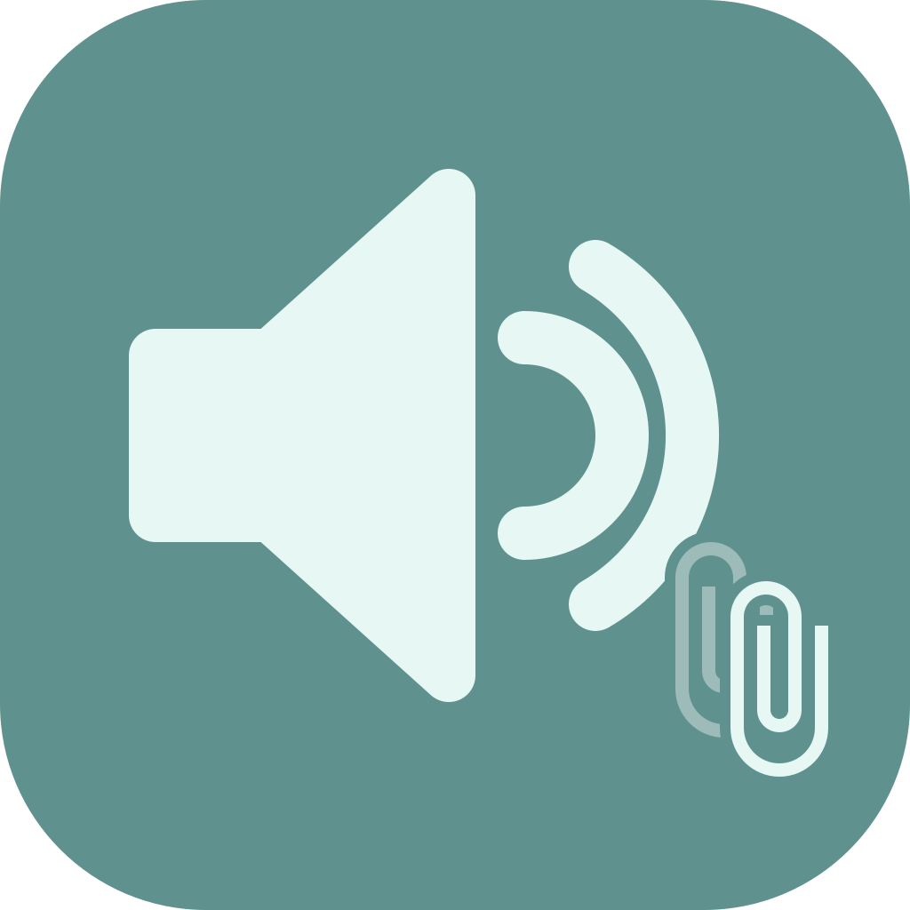

Eight apps open, a call starts, and something starts playing. Find it, turn it down, mute it, or pause it — from one speaker icon.
Windows has had a per-app volume mixer for twenty years. Your Mac has one now.
Every app producing audio, listed by name with a live level meter — so the one that's bouncing is the one making noise.
Each app gets its own slider and mute button, relative to the master. Relaunch the app and it comes back at 100%.
Play/pause Spotify, Music, TV, QuickTime or VLC directly — even Spotify playing on your office speakers — instead of guessing what the ⏯ key will hit.
Built on Apple's own Core Audio process taps. No virtual audio device, no kernel extension, no Accessibility permission — ever.
It replaces the Sound icon in your menu bar and stays out of the way until something starts playing that shouldn't be.
Master volume, mute, and an output-device picker — the three things Control Center buried. Nothing to set up, no permission to grant.
Hit Mixer › and every app that's producing audio drops down with a bouncing level meter, its own slider, mute — and play/pause where the app supports it. The guilty one is the one that's moving.
Spotify on the office speakers, YouTube in your headphones, and the ⏯ key pauses… whichever one macOS feels like. clipvolume talks to each app directly.
Pause the one playing across the room
Mute the tab you can't pause
Most of the app needs nothing at all. Here's exactly which feature needs what, and why.
macOS has no per-app volume API. The only driverless way to control one app's sound is to tap it: clipvolume asks Core Audio to mute that app at the speakers and hands the audio back to clipvolume, which plays it at the volume you chose. Apple files that capability under System Audio Recording. Apps you haven't touched are never routed through clipvolume, nothing is written to disk, and the app makes no network connections — the source is right there.
Free for personal use, open source, and about as light as a menu bar app gets.
Tick the box to enable the download.